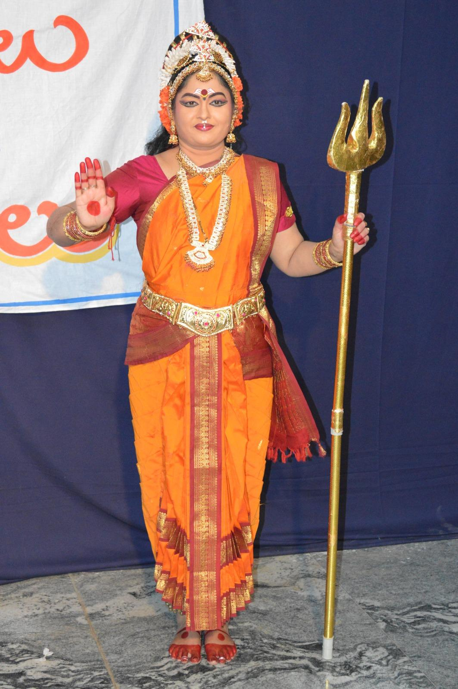
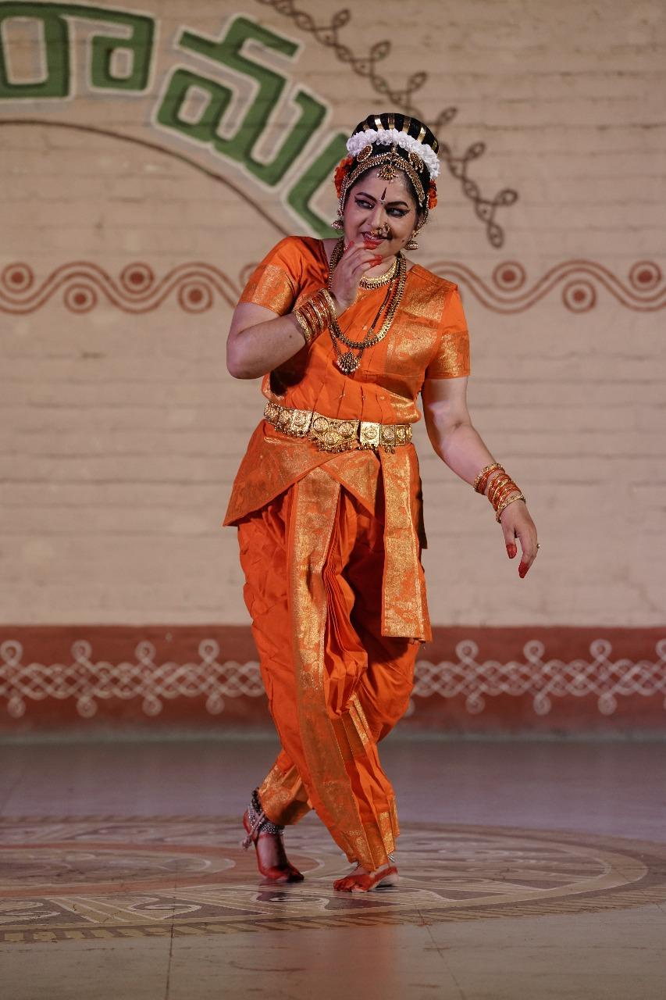
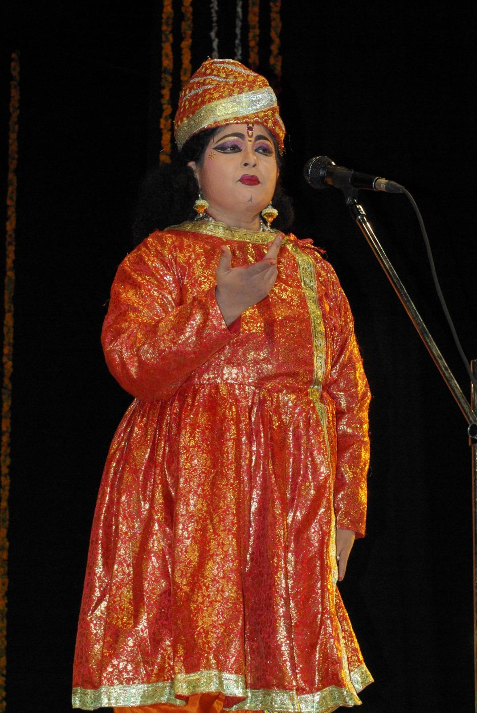

Smt. Narapuraju Sreelatha
Founder & Director
Kuchipudi Dancer | Choreographer | Educator
A dedicated exponent of Kuchipudi with over four decades of experience in performance, choreography, teaching and cultural preservation.
40+
Years in Dance
100+
Students Trained
18+
Years Teaching
Profile
Smt. Narapuraju Sreelatha is an accomplished Kuchipudi dancer, choreographer and educator who has dedicated her life to learning, performing and preserving the rich tradition of Kuchipudi.
She began her training at the age of nine under Guru Sri Pasumarthi Sheshubabu Garu and later refined her knowledge under Guru Dr. Bhagavathula Seturam Garu.
Through her work as a performer, teacher and institution builder, she continues to inspire future generations of dancers.
Academic Qualifications
- M.Phil. in Dance (Gold Medal)
- Master of Performing Arts (Kuchipudi) - Distinction
- Post Graduate Diploma in Satvikabhinayam - Distinction
- M.A. in Political Science

Teaching Journey
Through dedicated teaching and mentorship, Smt. Narapuraju Sreelatha has trained numerous students in Kuchipudi and inspired them to pursue excellence in Indian classical arts.
Her unique teaching approach combines traditional discipline, abhinaya, theory, mythology and practical stage experience.
Shaankari Kuchipudi Dance and Music Academy
Driven by a vision to preserve and promote Kuchipudi for future generations, she founded Shaankari Kuchipudi Dance and Music Academy in 2007.
The academy was formally registered in 2008 and has trained over one hundred students while nurturing traditional Indian cultural values through the performing arts.

